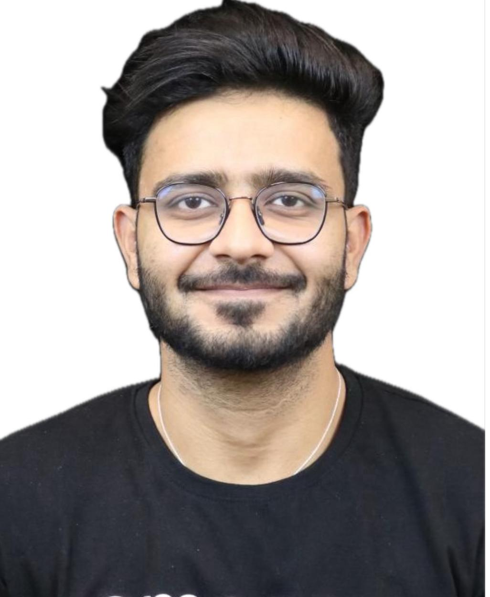

Amazon AWS, Bratislava, Slovakia
A results-driven Sr. Solutions Architect at Amazon AWS with deep expertise in Agentic AI, RPA, and enterprise automation. I lead global teams of 20+ members across AR, AP, and SSA verticals, driving AI-augmented agentic ecosystem integration and cutting-edge automation.
A four-time Blue Prism MVP, UiPath Community Award Winner, and passionate advocate for collective community growth. I believe in driving everything with a technical mindset and a "Yes" attitude fueled by curiosity and continuous learning.
Professional speaker, hackathon judge, and mentor — I'm committed to empowering the next generation of automation professionals worldwide.
Amazon AWS, Bratislava, Slovakia
Alteryx, Agentic AI, UiPath, AWS, Tableau, Python, Appian, Chime, DataLake, ChatBot
Amazon AWS, Bratislava, Slovakia
Alteryx, UiPath, AWS, Tableau, Python, Appian, Chime, DataLake, ChatBot
Amazon AWS, Hyderabad, India
Alteryx, UiPath, AWS, Tableau, Python, Appian, Chime, DataLake, ChatBot
Turbotic, Sweden
Fidelity International, Gurgaon, India
Microsoft Power Platform, Python, APIs, RPA, Appian, Layer7
Fidelity International, Gurgaon, India
Re:Sources, A Publicis Groupe Company (Sapient), Gurgaon, India
UiPath, Abby OCR, Google Cloud Vision API, Microsoft Power Automate
Ericsson India Global Services, Gurgaon, India
Blue Prism, UiPath, Python, VBA, SAP, Citrix
4x Most Valuable Professional — 2021, 2022, 2023, 2024
2022 — Recognized as the top MVP globally
Blue Prism Developer of the Year — Finalist
Winner — Felicitated at Las Vegas for BOT for Visually Impaired
2018 — Exceptional business impact, saving ~12 FTE headcount
2020 — Developed automation solutions for accessibility
JECRC, Jaipur
77%
Saint Soldier Public School, Jaipur
87%
Saint Soldier Public School, Jaipur
9.4 CGPA